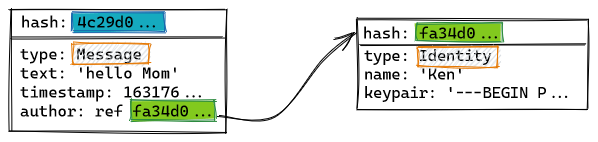

When we access a website, the choice of which service provider we are using does not matter. Thanks to the networking protocols that underpin the Internet, every service provider gives us access to the entire network, creating a universal solution for connectivity.
The Hyper Hyper Space protocol stack proposes a similar universal solution for information systems. While these systems work as peer-to-peer applications, a fully in-browser JavaScript implementation of Hyper Hyper Space (using IndexedDB for persistence and WebRTC as browser-to-browser transport) is available, thus making them as easily accessible as any other website.
Interoperability of Information Systems
The mainstream information systems we access through the Internet (for social networking, communications, workspace collaboration, e-commerce, etc.) work as information silos. The network interoperability makes them universally accessible, but that property does not extend to the information within, which is locked for access, interaction and modification only in the platform where it was created.
One proposed solution to this problem is replacing each a system by a federation of interoperable systems, from which participants can choose. The Hyper Hyper Space protocols propose instead a fully decentralized alternative, inspired by the design of the Internet itself.
The universal connectivity provided by the Internet works by defining a very simple network model, that can be implemented over virtually any networking technology: optimistic delivery of small packets of information. Each connected application then implements additional protocols, like TCP and UPD , to gain additional network guarantees according to their own needs: ordering, reliability, flow control, congestion prevention, etc. An important property of this design, known as the end-to-end principle, is that network operators are only bound to implement the simple packet-switching model, while application designers are free, up to a point, to create higher-level protocols that run on the devices that connect to the network. This feature played a crucial role in the development and adoption of the Internet.
The Hyper Hyper Space, following the same pattern, defines a simple information representation model, using immutable append-only merkle-DAGs. This is a generalization of the model used successfully by blockchain-based cryptocurrencies, but instead of storing financial transactions, each node in the graph may contain an arbitrary JSON-like object. Objects may reference each other by using their cryptographic hashes, like blocks do in a blockchain. Merkle-DAGs are easy to verify and synchronize between devices, while also offering a versatile representation to application-level protocol designers. Gossip and synchronization protocols, running over a mesh network overlay, can be customized by applications both to restrict access to the resulting DAG and to enforce application-specific validation rules. The resulting optimistic replication of application-defined DAGs fullfills a similar unifying role to the one packet-switching had in the design of the Internet.
Since the DAGs used by different applications don't need to be disjoint, this model enables new forms of interoperability. The support chat in a company's e-commerce store could be included inside the workspace collaboration system -if both were based on Hyper Hyper Space- not by using an API but by actually working on the same data strctures encoded over the DAG. New forms of content linking could be imagined, involving not just unidirectional links but richer interrelations over shared information. Instead of URLs and anchors inside a document, the entire internal structure of an entity as it is represented on the DAG can be referenced from the outside. The cryptographic hash function used for referencing objects guarantees that this can be done without unwanted collisions.
Information as merkle-DAGs
There is a significant mismatch between writing to an append-only immutable DAG and the mutable data structures an application designer may expect. The Hyper Hyper Space offers a data modelling library, currently available for TypeScript and JavaScript environments, and a hash-based key-value store. Datatypes created using the library can be automatically translated into operations over the immutable DAG and saved to the store. Once saved, they can be syncrhonized automatically over the mesh network. A memory backend for transient uses, one backed by IndexedDB for web browsers, and a SQLite-based version for use in NodeJs are included.
Storable objects can be constructed using literals (strings, numbers, arrays, dictionaries, etc.) and references to other objects in the store. These references, however, will also use hashes to identify their targets.
In the following example, an object of type Message references another of type Identity through its author field, using its hash value fa34d0…:
It is easy to see that this representation only works for immutable objects. If Ken changed his name to Kenny, the hash of the Identity object would change. All existing references, including the one in the Message object above, would still point to the original version!

Spaces
On the Internet, IP addresses are the network-independent identifiers that enable universal connectivity. Similarly, Hyper Hyper Space introduces an application-independent representation for information objects: Spaces. A space may contain a chat room, a discussion forum, an e-commerce store, a blog, etc.
Spaces are universally accessible using 3-word codes. When ownership and access restrictions are necessary, Spaces use Hyper Hyper Space native cryptographic identities, that can be exported from one application to another, to authenticate peers.
As an example, here is a demo chat system based on Hyper Hyper Space. Each chat room is a space, and has its own 3-word code. The page is static, and the contents of each chat room are synchronized between participants browser-to-browser. If you copy the page and host it elsewhere (or locally on your own computer), everthing would work exactly the same.
Websites may be used to look up spaces like in the example above. Spaces can also be embedded using iFrames, and a website may also pin down and load a fixed space, providing an experience similar to a regular page.